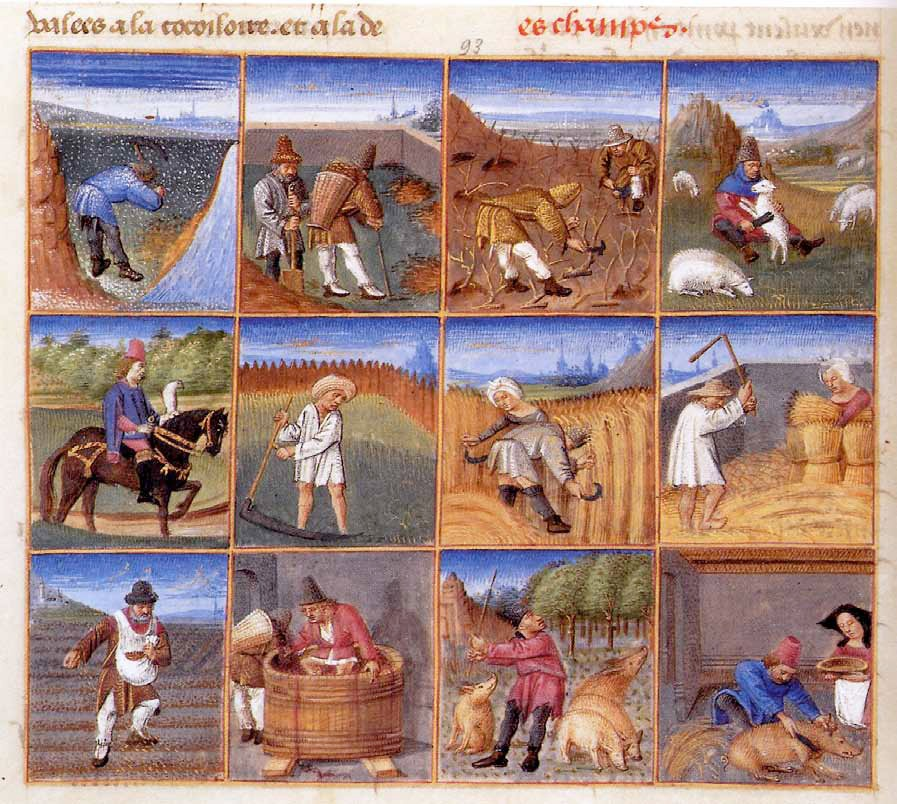

Mixed Pickles
'Take rote of persel, of pasternak, of rafens, scrape hem and waische
him clene. Take rapes & caboches, ypared and ycorue. Take an erthen
panne with clene water & set it on the fire; cast all thise therinne.
Whan they buth boiled cast therto peeres & perboile hem wel. Take alle
thise thynges vp & lat it kele on a faire cloth. Do therto salt; whan it
is colde, do hit in a vessel; take vyneger & powdour & safroun & do
therto, & lat alle thise thynges lye therein at night, other al day.
Take wyne greke & hony clarified togider; take lumbarde mustard &
raisouns coraunce, al hoole, & grynde powdour of canel, powdour douce &
aneys hole, & fenell seed. Take alle thise thynges & cast togyder in a
pot of erthe, & take thereof whan thou wilt & serue forth.'
Curye on Inglysch, IV. 103.

This recipe creates the perfect accompaniment to your Christmas cheese
and crackers. Pickling was an important way of preserving vegetables in
the Middle Ages, and still is.
The French Medieval household book Le Ménagier de Paris (the Goodman of
Paris) had recipes for pickling walnuts and various vegetables and
fruits grown on the fictional writer's farm, but he soaked the whole lot
in honey – probably ruining the teeth of everyone in his household! This
recipe is not quite as sweet and is more like modern recipes.
Ingredients:
- 900g mixed parsley roots, carrots, radishes and turnips
- 450g white cabbage
- 450g hard eating pears
- 6 tbsp salt
- 1 tsp ground ginger
- 1⁄2 tsp dried saffron strands
- 425ml white wine vinegar
- 50g currants
- 575ml fruity white wine
- 1 tsp of French mustard
- 1⁄8 tsp each of ground cinnamon and black pepper
- 1⁄4 tsp each of anise and fennel seeds
- 50g white sugar
- 6 tbsp clear honey, or (vegan alternative) an additional 6 tbsp of sugar
Instructions:
-
Wash and peel the root vegetables and slice them thinly. Core and
shred the cabbage. Put the vegetables into a large pan of water and
slowly bring to the boil. Peel, core and cut up the pears and add them
to the pan. Cook until they start to soften.
-
Drain the contents of the pan and spread in a 5cm layer in a shallow
non-metallic dish. Sprinkle with the salt, ginger, saffron and 4 tbsp
of the vinegar. Leave, covered, for 12 hours.
-
Rinse well, then add the currants. Pack into sterilised storage jars,
with at least 2.5cm headspace.
-
Put the wine and honey in a pan. Bring to simmering point and skim.
Add the rest of the vinegar and all the remaining spices and sugar.
Reduce the heat and stir without boiling until the sugar dissolves.
-
Bring back to the boil. Pour over the vegetables, covering them with
1cm of liquid. Cover with vinegar-proof seals and store.
Makes 2.3kg